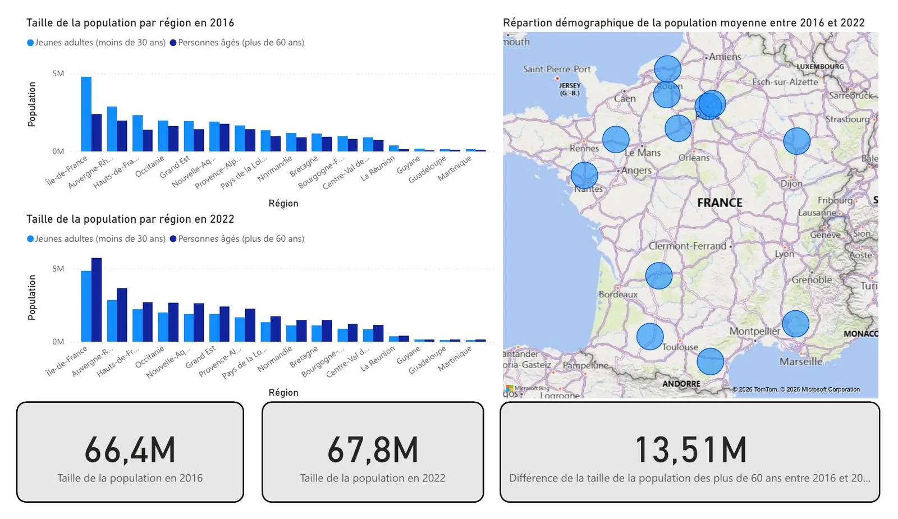

Challenge Dataviz 2026 - l’évolution démographique des régions françaises, 2016–2022
En une journée, notre équipe de quatre a transformé les fichiers INSEE en une infographie Power BI d’une page, pour répondre à une question simple : les régions françaises vieillissent-elles toutes de la même façon ?
- Rôle
- Données, visuels Power BI, rapport
- Outils
- Excel · Power BI Desktop
- Données
- INSEE · 18 régions · 2016 et 2022
- Durée
- 1 journée (9h – 16h)
- Équipe
- 4 étudiants, IUT de Paris
- Livrable
- Infographie 1 page + rapport
01 Contexte
Une journée, une question, 18 régions.
Le Challenge Dataviz 2026 est organisé par les départements Science des Données des IUT de France, en partenariat avec l’INSEE. Plus de 600 étudiants de 1re année de BUT SD, répartis dans 15 départements, ont travaillé sur une problématique commune autour de l’analyse démographique des territoires.
Notre groupe - quatre étudiants du département SD de l’IUT de Paris – Rives de Seine - disposait d’une journée entière, le 21 mai 2026 de 9h à 16h, pour livrer une infographie complète.
« Peut-on remarquer une évolution démographique différente par région entre 2016 et 2022 ? »
L’enjeu : transformer des données démographiques brutes en une infographie synthétique, lisible et rigoureuse, permettant de comparer l’évolution de la structure par âge des régions françaises sur six ans.
02 Données & outils
Des fichiers INSEE à l’infographie.
Deux outils, chacun avec un rôle défini dans la chaîne de production.
- Source
- Fichiers statistiques officiels de l’INSEE - évolutions démographiques par zone géographique et par tranche d’âge
- Périmètre
- 18 régions françaises, métropole et DOM inclus · années 2016 et 2022
- Variables principales
- Population totale · jeunes adultes (moins de 30 ans) · personnes âgées (plus de 60 ans)
Étape 1 · Excel
Nettoyer, structurer, vérifier
- Nettoyage et structuration des données brutes issues des fichiers INSEE
- Préparation des agrégats par région et par tranche d’âge
- Vérification de la cohérence des indicateurs avant restitution
Étape 2 · Power BI Desktop
Construire l’infographie sur une page
- Infographie finale sur une page unique, conformément aux exigences du challenge
- Graphiques en barres comparatifs pour 2016 et 2022
- Cartographie de la répartition démographique moyenne par région
- Trois indicateurs clés (KPI) en bas de page
03 Dashboard
Le livrable, reconstruit en interactif.
L’infographie Power BI du challenge, recodée en HTML, CSS et JavaScript : choisissez l’année et l’indicateur, survolez les régions.
- …habitants en France en 2016
- …habitants en France en 2022
- …personnes de plus de 60 ans en plus entre 2016 et 2022
- …régions où la part des plus de 60 ans progresse
Voir les données du graphique
Infographie interactive indisponible (données non chargées). La capture du dashboard original ci-dessous et le rapport PDF restent accessibles.
Source : INSEE, estimations de population au 1er janvier par région et tranche d’âge - valeurs arrondies au millier. Reconstruction en D3 et Chart.js de l’infographie réalisée sous Power BI pendant le challenge.

- Axe 1
Taille de la population par région en 2016, jeunes adultes et personnes âgées distingués.
- Axe 2
Même comparaison en 2022, avec les mêmes catégories, pour lire l’évolution région par région.
- Axe 3
Évolution nationale de la population des plus de 60 ans entre 2016 et 2022.
- Axe 4
Cartographie de la répartition démographique moyenne par région sur les deux années.
04 Résultats
Ce que disent les données.
Trois tendances majeures sur la période 2016–2022.
- 66,4 → 67,8 Mhabitants en France, 2016 → 2022
- +1,4 Mhabitants en six ans
- 18 / 18régions concernées par le vieillissement
Croissance de la population nationale
La population française est passée de 66,4 millions d’habitants en 2016 à 67,8 millions en 2022, soit une hausse de 1,4 million sur six ans.
Vieillissement démographique marqué
La population des plus de 60 ans progresse nettement entre 2016 et 2022, illustrant une tendance de fond au vieillissement de la population française.
Tendance homogène sur tout le territoire
Le vieillissement se retrouve dans toutes les régions sans exception. En Île-de-France, la part des personnes âgées augmente alors que les jeunes adultes restent stables autour de 5 millions.
05 Mon rôle
Ma part du travail.
Ce que j’ai fait
- Préparation et contrôle des données INSEE dans Excel
- Construction des visuels Power BI : barres comparatives, carte, indicateurs clés
- Rédaction du rapport de projet
- Coordination avec l’équipe pour tenir le format « une page » dans le temps imparti
Ce que j’en retiens
- Produire un livrable rigoureux et lisible sous forte contrainte de temps
- Passer de données brutes à une infographie orientée décision
- Répartir le travail en équipe et converger vers un seul support
- Renforcer ma maîtrise de Power BI en conditions réelles
Équipe
Losseni Zouri, Sezgin Aydin, Loïc Zhang et Aaron Biyoo - département Science des Données, IUT de Paris – Rives de Seine.
06 Rapport
Le rapport complet, en PDF.
Contexte, organisation, description des données, dashboard et résultats clés - trois pages, 250 Ko.